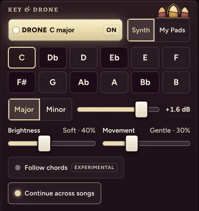
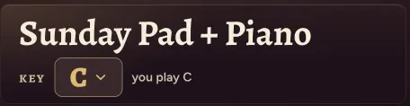
Key & drone
Play in any key
Set the song's key and a soft drone holds the root, fifth and octave underneath, with no third, so it sits under major and minor chords and crossfades when the key changes.
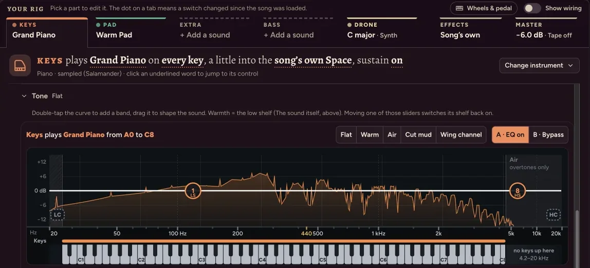
Up to 16 sounds · new in 2.0
Layer up to 16 sounds, shaped to the room
A song starts with four (keys, pad, extra and bass) and takes up to 16. Each gets its own level, space, echo and an 8-band EQ drawn over a piano keyboard, so you can see which notes a cut will touch.
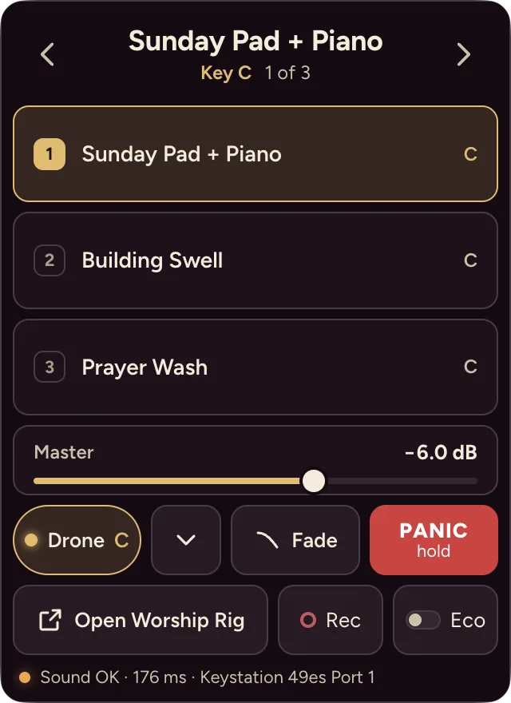
Menu bar mode · 1.x Mac app
Keep it running in the menu bar
Close the window and keep playing: switch songs, the drone and the master level from the menu bar. In the 1.x Mac app; the 2.0 app doesn't have it yet.
10 on Activity Monitor's energy scale while hidden, 55 in front, measured with the drone playing.
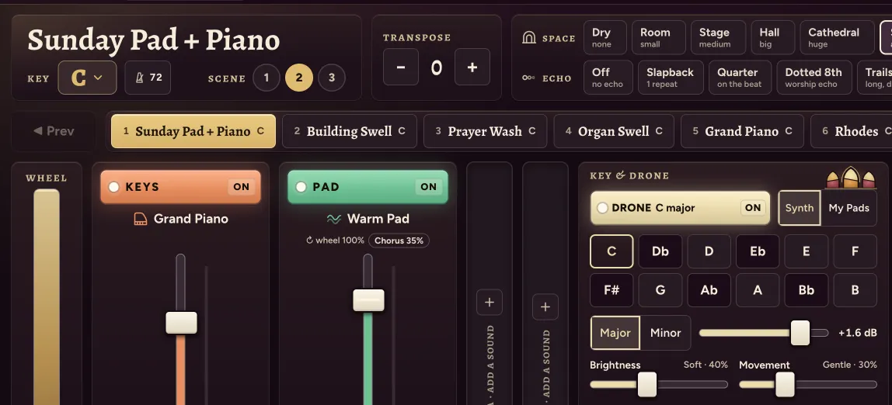
Scenes · more in 2.0
Verse, chorus, bridge on one footswitch
Save up to three scenes per song and step through them with a footswitch or the numbers on Perform. From 2.0 a scene also brings its own Space, Echo and drone. Each change glides over half a second, and the notes you're holding keep ringing.
No click when a scene changes: the biggest sample-to-sample step is the same as on a steady note (a hard switch measured 22.9 times that).
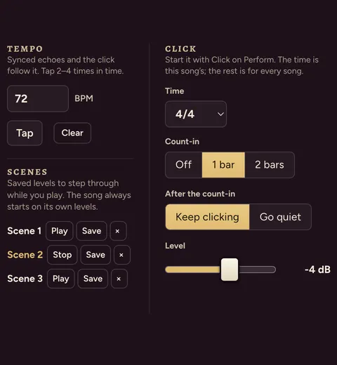
Click & count-in · new in 1.1
A count-in that never holds up the song
Tap Click and the band hears one or two bars, then the click or quiet. Change songs whenever you like: a running click picks up the new tempo on the next beat. With a 4-output interface it plays in your in-ears only, and in Chrome and the 1.x app MIDI clock can drive a delay pedal.
Every click lands within 0.3 samples of the beat, and the click uses 0.14 % of one CPU core.
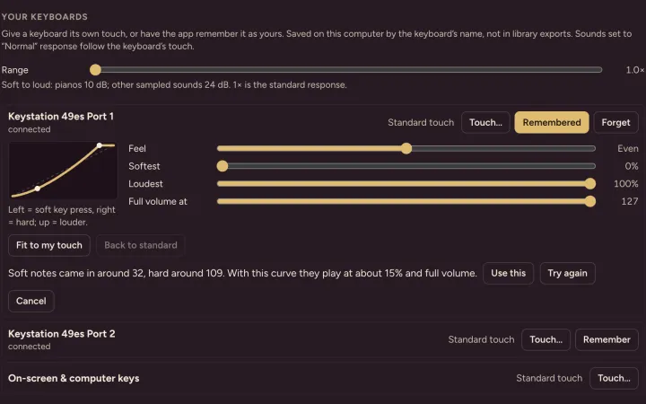
Your keyboards · new in 1.1
A touch that fits your keyboard
Play six soft notes and six hard ones, and Worship Rig fits its touch to that keyboard. Each keyboard keeps its own, saved on this Mac. One Range slider sets how far soft is from loud: softer soft notes, and hard notes that go past the old full level.
A keyboard's own curve adds less than a microsecond to each note.
Appearance
Eight looks for the stage and the booth
Two light, six dark. Sanctuary is the default (themes.js). Pick one to see Perform in it.
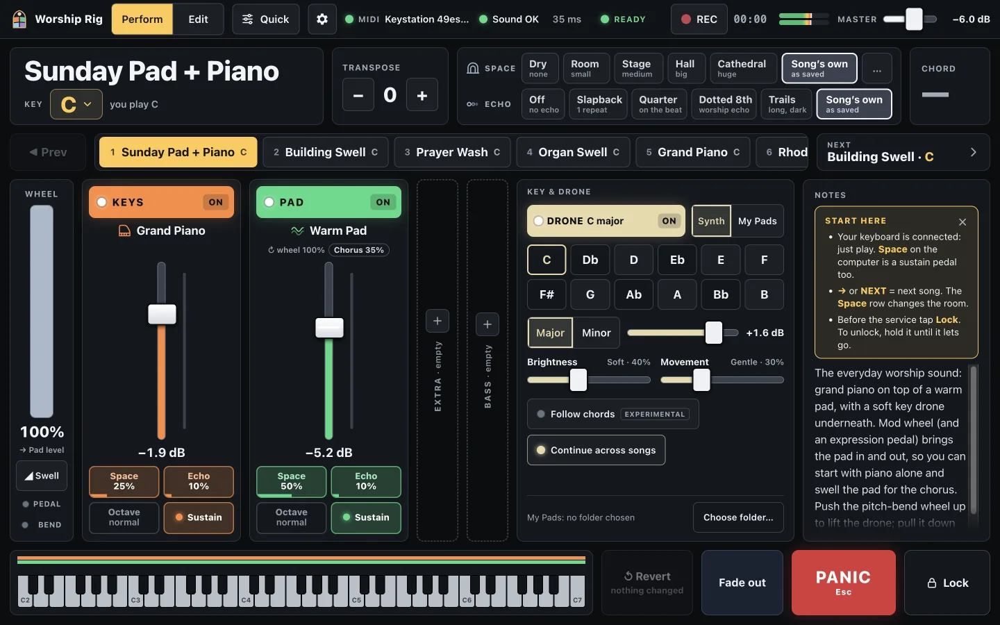
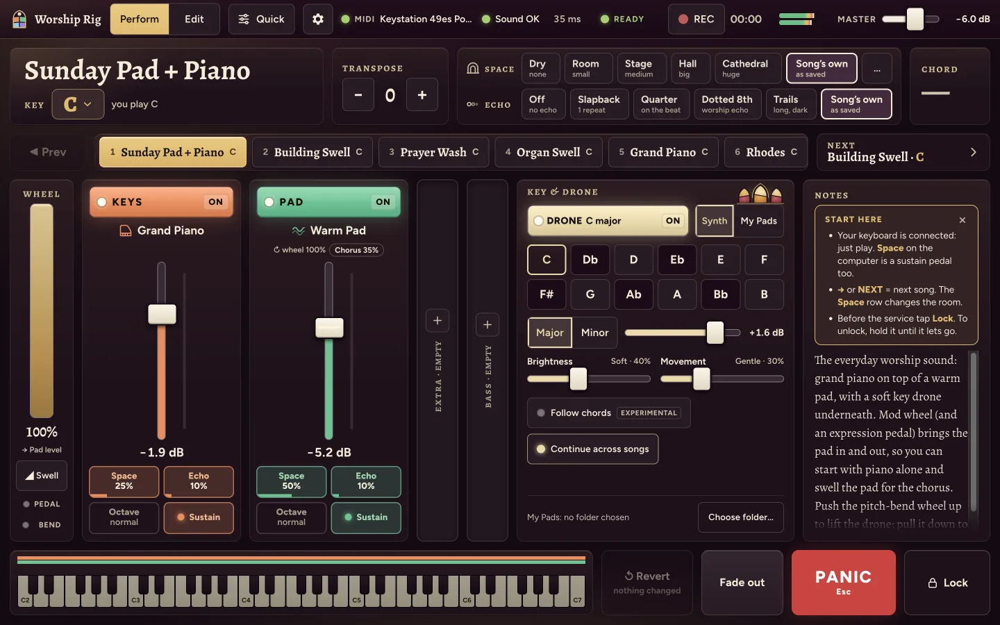
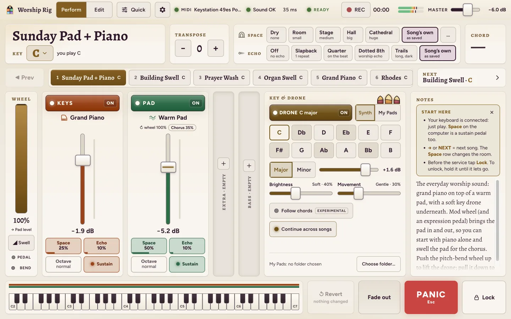
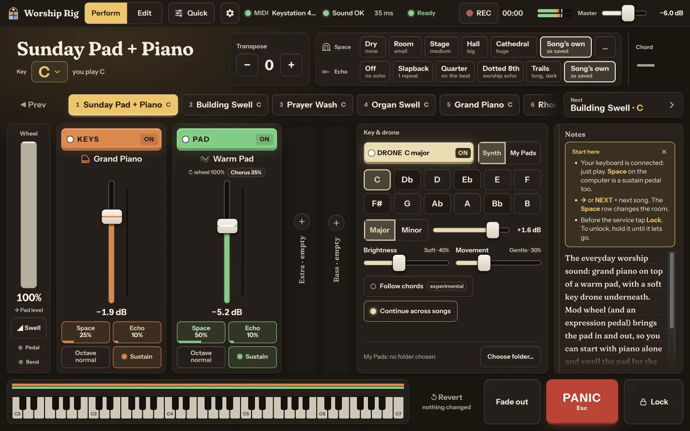
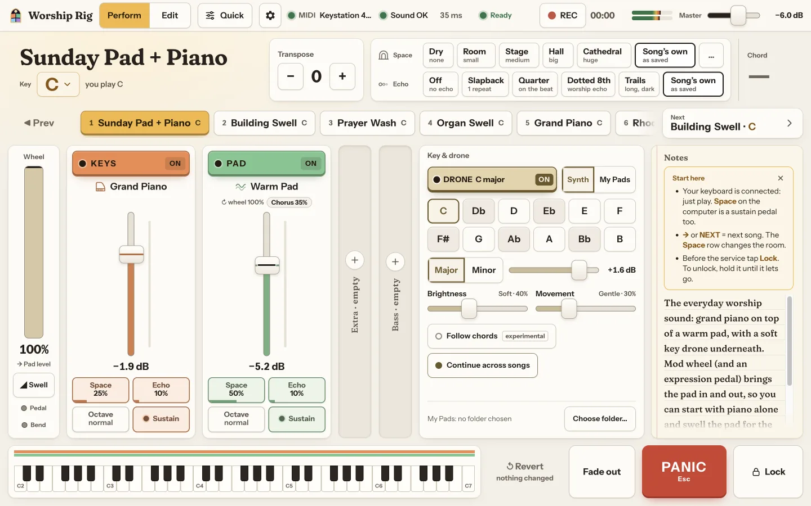
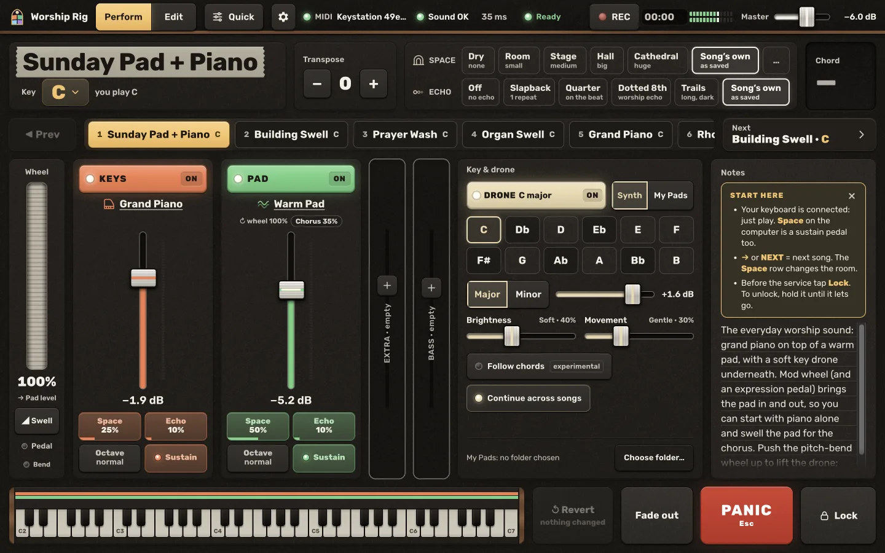
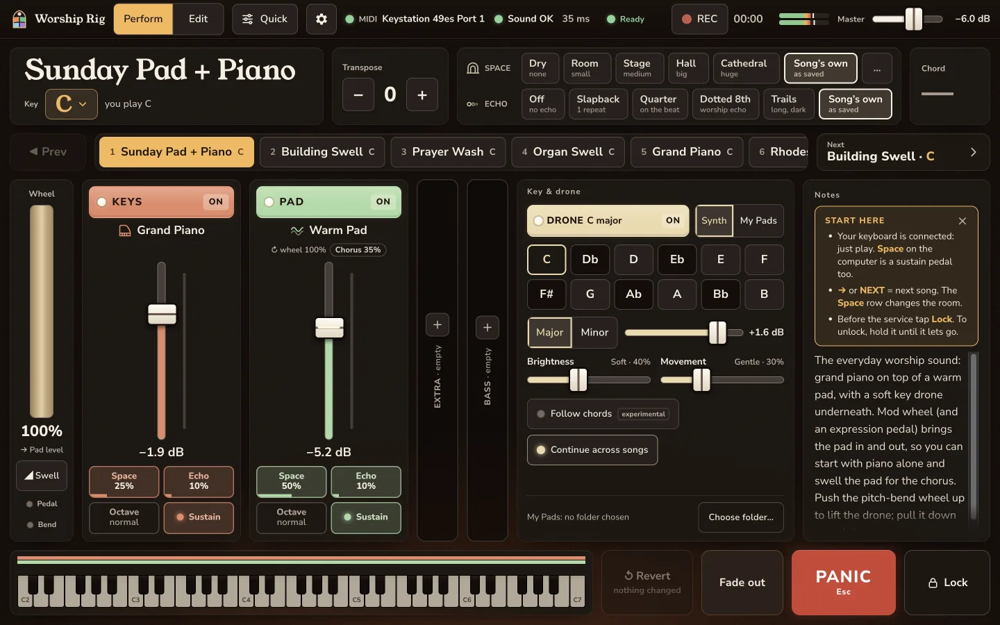
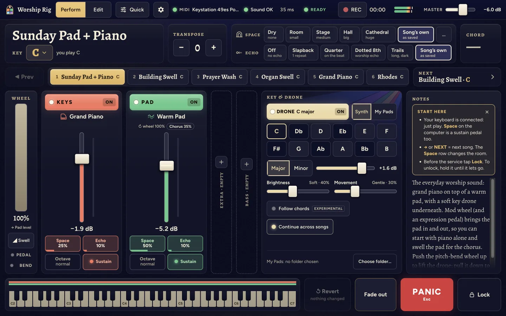
Version 2.0
What's new in 2.0
A new Mac app with its own sound engine, and the first iPad version. Your 1.x songs, setlists and settings come over. Full release notes. Before: 1.1, 1.1.1.
-
Its own sound engine
The Mac and iPad app play through a C++ engine instead of the browser's audio. It matches the 1.x sound on all 112 test renders, and prepares the next and previous songs ahead of time.
Settings › Sound · voices, buffer size, voice limit
-
Up to 16 sounds a song
Add or remove sounds from 1 to 16. A 1.x song keeps its four exactly, and Perform scrolls when they don't all fit.
Edit › Slots
-
Cue, then Go
Tap a song in the setlist to cue it; nothing changes until Go. Each song shows whether it is ready, and a footswitch on Next plays the cue.
Perform › setlist · Next is Go
-
Scenes that bring more
A scene now also keeps each sound's Space and Echo, the room, and the drone on or off, gliding without restarting a note. Its drone follows the key you play in.
Quick › This song › Save as scene
-
MIDI Learn on any setting
Right-click any slider or fader in Edit and move a knob. One knob can drive several faders, and Revert undoes what it moved.
Edit › right-click › Learn MIDI knob
-
Chord charts
Paste or import ChordPro or chords over lyrics. The chords follow Easy Transpose, and the chart scrolls by itself in big type.
Perform › Chart · on by default
-
Patch packs and the Song bank
Put song files in a pack folder and they join your library, or keep a bank of songs to add when you want them. Your files stay on your Mac.
Settings › Sounds & Samples › My Samples · Chrome for now
-
Colour-blind colours
Instrument colours chosen to stay apart for red–green or blue–yellow colour blindness, with each instrument's number on its bar.
Settings › Look › Appearance
-
The iPad
The same app and the same library on an iPad, installed from Xcode with a free Apple ID. Bring your songs over by AirDrop.
iPadOS 17.5 or later · no App Store version
-
A new layout to try
Instrument strips across the stage, a sidebar for the drone, setlist, notes, click and chart, and a Song bank with Try it. A preview until it becomes the default.
Settings › Look › Perform view › Try the new layout
Get Worship Rig
Free, and source-available for noncommercial use. Plug in a MIDI keyboard, pick a song, play. Everything runs on your Mac or iPad.
Apple Silicon, macOS 14.5 or later · Intel or older macOS: 1.1.1 · all downloads. Not notarized by Apple: the first time, follow these steps to open it.
The iPad app is installed from Xcode: native/apple/README.md, steps 7–10.
Optional sound packs
Extra free instruments you can pick and download on their own, so the app stays small. They are not ready yet: this list gets a download link for each pack when it is.
- VSCO 2 Community Edition orchestral strings, winds and more · CC0 · not available yet
- Karoryfer String Cyborgs, Bigcat Cello, Meatbass and more · CC0 · not available yet
- VCSL the Versilian Community Sample Library · CC0 · not available yet
Details
Install
- Coming from 1.x? Open the old Worship Rig once and quit it, so its latest backup is on disk. 2.0 offers to import it on its first launch (steps).
- Download. Click Download for Mac at the top of this page. The file
Worship-Rig-arm64.dmglands in your Downloads folder (in Safari, click the download arrow in the toolbar to see it). Apple Silicon (arm64) with macOS 14.5 or later; for an Intel Mac or an older macOS, use 1.1.1. - Install. Double-click the
.dmg. In the window that opens, drag Worship Rig onto the Applications folder. Then eject the disk (the eject button next to it in Finder's sidebar). Always open the app from Applications, not from the disk window or Downloads. - First launch: Open Anyway. The app is free and isn't notarized by
Apple, so macOS stops it the first time. On macOS 14, right-click the app in Applications ›
Open, then Open in the box that appears, and you're done. On macOS 15 and
later, right-click › Open no longer gets past this, so:
- Open Worship Rig from Applications. macOS says it could not verify the app. Click Done (not Move to Trash; on macOS 14 the buttons differ: just close the message).
- Open System Settings (Apple menu) › Privacy & Security. Scroll down to Security: there is a line saying Worship Rig was blocked, with an Open Anyway button. Click it.
- Click Open Anyway again in the box that appears, and enter your Mac's login password. Worship Rig opens. You only do this once; after that it opens normally.
No Open Anyway button?
- Try to open the app first. The button only appears after macOS has blocked the app, and only for about an hour. Open Worship Rig from Applications again, click Done, then go straight back to Privacy & Security.
- Check "Allow applications from". In the same Security section, if it says App Store, change it to App Store & Known Developers (on macOS 14: App Store and identified developers). With "App Store" only, macOS won't open apps from anywhere else, so you may not get Open Anyway.
- Close and reopen System Settings. If it was already open on Privacy & Security, it may not have refreshed.
- Still nothing, or "Worship Rig is damaged" / "does not have permission to open (null)":
use Terminal once. Open Terminal (Applications › Utilities), paste this line and
press Return:
It removes the "downloaded from the internet" flag from this one app, so macOS stops blocking it. Then open Worship Rig normally. If Terminal says "No such file", the app isn't in Applications yet: go back to the Install step.xattr -dr com.apple.quarantine "/Applications/Worship Rig.app" - Apple's own steps: Open an app by overriding security settings.
- MIDI. macOS usually doesn't ask about a USB keyboard; if it does, allow it. If the MIDI light stays off, pick the keyboard in Settings › Keyboards & MIDI. No keyboard? The computer keys play notes too.
- Output. Use the headphone jack or a wired interface, not Bluetooth: Bluetooth measured 176 ms against 20 ms on a USB-C dock (hardware check).
- Updating. Quit Worship Rig, open the new
.dmgand drag it over the old app. Your songs stay. The 1.x app's Settings › About tells you when a new version is out; the 2.0 app doesn't check yet, so look at the releases. - iPad. Installed from Xcode on a Mac with a free Apple ID, re-installed every 7 days (steps 7–10). iPadOS 17.5 or later.
Full steps: README › Running on your Mac.
What's in the box
- 23 sample sets (79.2 MB): grand and upright piano, electric pianos, mallets, bells, guitars, harp and more (LICENSES.md).
- 16 synth patches (synth.js, synth-extra.js) plus a drawbar organ with a rotary speaker (organ.js).
- 19 factory songs in five groups, each with a note on what it's for (presets.js, README), and 6 Spaces, 5 Echoes and 6 Vibes (fx-presets.js).
- Starter library: worship-rig-starter-library.json (62 KB), loaded from Settings › Library & backups › Import…
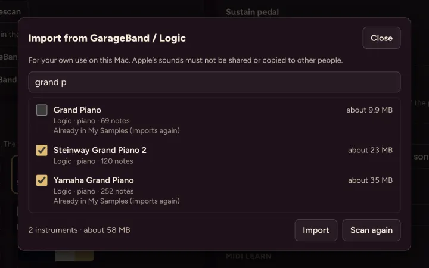
Sounds from GarageBand or Logic
In Chrome and the 1.x Mac app; not in the 2.0 Mac app yet.
If GarageBand or Logic is installed, Settings › My Samples › Import from GarageBand / Logic… converts their sampled instruments into your My Samples folder, and they show up in the instrument picker without a restart (a command-line tool does the same). Those sounds are Apple's and licensed to you for personal use: they stay on your Mac, and Worship Rig never ships, uploads or shares them. Step by step: docs/garageband-import.md.
Full-size screenshots (1440×900, Sanctuary; today's screens, which stay the 2.0 default until the new layout replaces them): Perform · Edit · EQ · Settings · Appearance and menu bar.